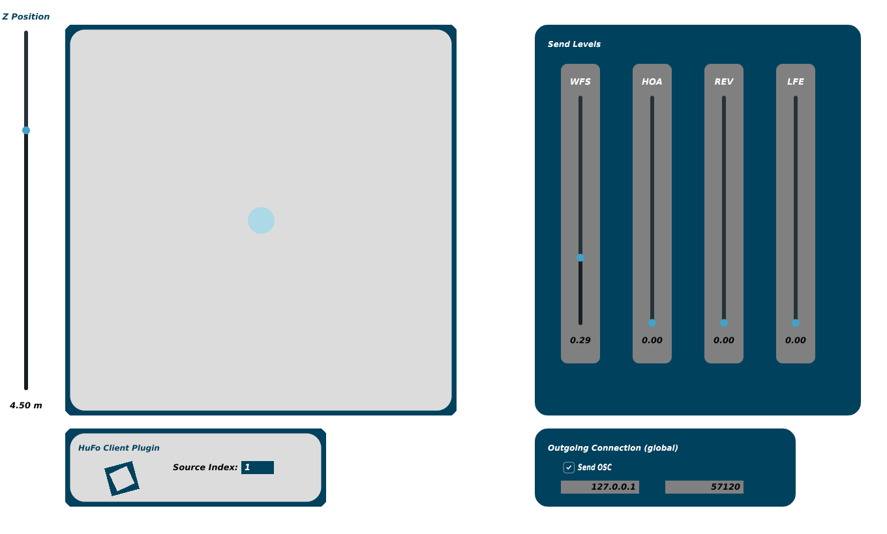
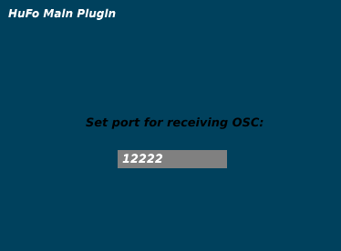

SeamLess Plugins
The SeamLess Plugins are designed to control SeamLess, which combines multiple methods for spatial sound reproduction. They are currently being tested as VST3 on both Linux and MAC systems with Reaper as the standard DAW.
For automating system parameters from a DAW, multiple instances of the Client Plugin are needed. For remote OSC control of the automations, a single instance of the Main Plugin is required.
Client Plugin
For controlling the properties of multiple sound sources, a Client Plugin needs to be added to each channel of a DAW project. It does not process audio. The Source Index needs to be set for each individual instance. Indices should not be duplicated.
All instances share the same Outgoing Connection properties. Each Client Plugin sends all parameters at a fixed send rate of 50 Hz, if not disabled.

Main Plugin
If included, the Main Plugin needs to be added to the project before all Client Plugins. It does not process any audio and can be added to any channel or bus. The only parameter to be set is the port on which to listen for incoming OSC messages.
